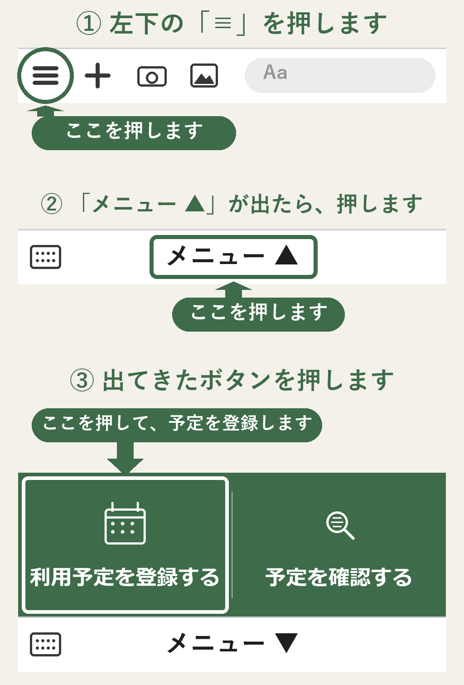

読み込み中...
お子さんの登録
下のお名前で、
登録します。
お子さんのお名前
先に、友だち追加をお願いします
追加すると、
保護者連絡のトークに、
登録のご案内が届きます。
友だち追加する
追加しました
登録する
登録しています。
そのままお待ちください。
✓ 登録できました
次は、
保護者連絡のトークを開いて、
下のメニューから、
予定を登録します。
メニューが見えないときは、
下の図のとおり、
左下の「≡」から押します。

保護者連絡のトークを開く
最初の1回だけ、お願いします。
お名前だけで登録できます。
お迎えの設定や時刻は、
このあと、予定の登録画面で
決められます。
① お子さんのお名前(フルネーム)
＋ きょうだいを追加
登録する
この内容で登録します。よろしいですか？
戻って直す
登録する
登録しています。そのままお待ちください。
利用予定を登録する
予定を登録するお子さん
全員まとめてを選び、②の詳細入力で個別変更する事もできます。
①
日にちをタップして選択
（選択後②で詳細入力）
‹
›
日
月
火
水
木
金
土
②
日ごとの詳細入力
便利機能
いつもの時間を登録
お迎え・利用時間を登録しておくと
日ごとに入力する手間を省けます。
登録後も日ごとの詳細入力で
個別に変更もできます。
ふだんのお迎え
お迎え必要
お迎え不要
お迎えの場所
玄関
子ども教室
お迎えが必要な日の時刻
下校の時刻
帰りの時刻
お迎えが不要な日の時刻
来所の時刻
帰りの時刻
長期休みの日の時刻
来所の時刻
帰りの時刻
来所・帰りの時刻
来所の時刻
帰りの時刻
いつもの時間の設定を、とじる
③
送信するボタンを押す
画面の版: 11/9-d
この内容で送ります。よろしいですか？
戻って直す
この内容で送信する
✓ 送信しました